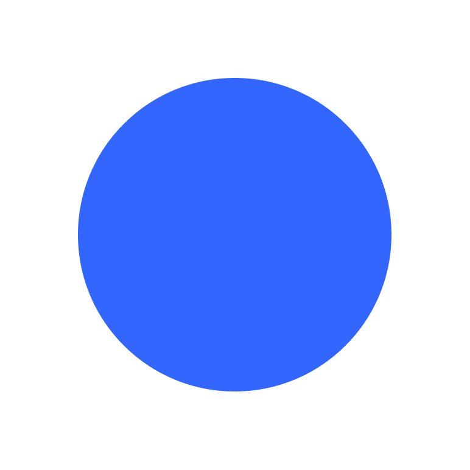

ARTEFACTOS
En el marco de este proyecto proponemos el concepto de artefacto relacional para referirnos a dispositivos diseñados colectivamente como mediaciones sensibles entre actores humanos y más-que-humanos, comunidades, territorios y tecnologías. Los artefactos no solo representan realidades, sino que las co-producen, activando ecologías de saberes y formas colaborativas de imaginar alternativas al modelo extractivista.



Maqueta Cuenca Oceánica
Maqueta Terrestre
Tarjeta Evidencia
Proyector
Extrusor de Arcilla